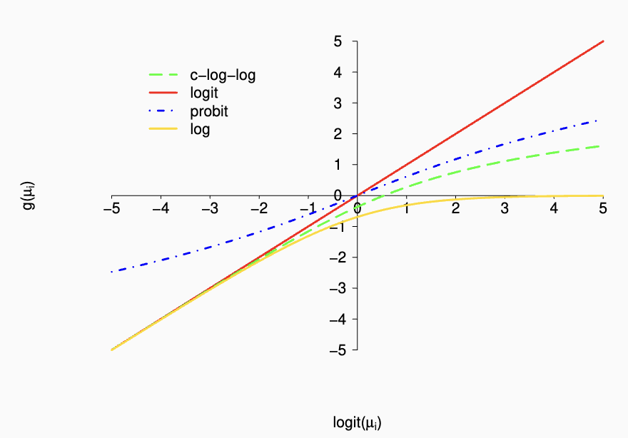

The contrast we’re modeling here is the risk ratio.
The log link doesn’t necessarily respect the fact that the true response probability has an upper bound of 1. We can see this by considering the inverse of the link function: \[\mu_i = \exp\{ \beta_0 + \beta_1 x_i \}\] which takes values on \((0, \infty)\).
Logit link function
The logit link is the canonical link function for binary outcomes, and the GLM for Bernoulli outcomes using the logit link is known as logistic regression. The systematic component is:
Amemiya (1981) also shows that when \(\mu \in (0.3,0.7)\), there is an approximate relationship between the coefficients from models using the logit and linear links:
This might come from a relatively simple Taylor expansion of the expit function.

When working with rare outcomes, the log, logit, and complementary log-log links give us pretty much the same things. When working with more common outcomes, the different links give us quite different outcomes.
From the figures, differences across these link functions manifest primarily in the tails when probability of response is small or large.
Also the logit and probit functions are almost linearly related.
For small values of \(\mu_i\), the complementary log-log, logit, and log functions are close to each other.
Equally good for rare events
For \(\mu_i \leq 0.1\)\[\log \left( \frac{\mu_i}{1-\mu_i} \right) \approx \log(\mu_i) \]
log link has the best interpretation
OR and RR are close numerically
What people often do is fit logistic regression, estimate an odds ratio, and then say because the OR is a rare outcome, it’s also approximately a rate ratio/relative risks. Why not just fit the log-link model? It may be computationally challenging/tricky.
Modeling Wester Collaborative Group Study (WCGS)
Returning to the WCGS, the dataset has a number of covariates that we might consider including in a model for CHD risk:
behavior pattern, age, height, weight, SBP, DBP, cholesterol, number of cigarettes smoked per day
How do we approach making decisions about what to include in the model?
Depends on the objective (association vs. prediction)
As usual, we’ll focus more on associational models here
We discussed model selection based on a priori knowledge previously.
One strategy is to fit and report the following three models:
An unadjusted or minimally adjusted model (i.e., including only the variable of interest)
A model that includes ‘core’ confounders
Clear indication from scientific knowledge and/or the literature
Consensus among investigators
A model that includes ‘core’ confounders plus any ‘potential’ confounders.
Indication is less certain.
Then we would report analysis 2 as the main analysis, reporting analysis 1 and 3 as sensitivity analyses.
library(equatiomatic) # for extract_eq# see https://datalorax.github.io/equatiomatic/ fit1 <-glm(chd ~ behave + age + wt + sbp + chol + smoker, family =binomial(), data = wcgs)extract_eq(fit1)
Registered S3 methods overwritten by 'broom':
method from
tidy.glht jtools
tidy.summary.glht jtools
We think the \(\chi^2\) reported in the model.fit statistics is the global \(\chi^2\) statistic for a likelihood ratio test, but we should double-check.
The coefficients’ z-values and \(p\)-values are related to univariate Wald tests.
# now including height and dystolic blood pressurefit2 <-glm(chd ~ behave + age + wt + sbp + chol + smoker + ht + dbp, family =binomial(), data = wcgs)jtools::summ(fit2, confint = T, digits =3, exp = T, model.fit = F, model.info = F)
Interpretation of \(\widehat{OR} = \exp(\beta_{\text{behave}}) = 1.99\) from the core model:
Odds of CHD in Type A men are 1.99 times those of Type B men
Odds of CHD are \((1.99 - 1) \times 100 = 99\%\) greater for Type A vs. B.
Before we said that more than a ~10% change in a variable coefficient in going from an unadjusted to an adjusted model in a linear model setting is one heuristic for considering a variable as a potential confounder.
That heuristic no longer works in the GLM setting with non-identity links.
# sometimes called a forest plot:jtools::plot_summs(fit0, fit1, fit2, exp = T, error_pos ='right', model.names =c('Unadjusted', 'Core', 'Full'))
By far this is the most common link function used for GLMs of binary data.
It’s guaranteed that fitted values are in (0,1)
Reasonable interpretation of constrats in terms of odds ratios
When the event is rare, OR \(\approx\) RR
We have the ability to synthesize case-control data as if it had been collected prospectively
What about other link functions?
Potential choices include:
Link
Function
Linear
\(g(\mu_i) = \mu_i\)
Log
\(g(\mu_i) = \log(\mu_i)\)
Probit
\(g(\mu_i) = \text{probit}(\mu_i)\)
Complementary Log-log
\(g(\mu_i) = \log\{ - \log(1-\mu_i)\}\)
For the goal of characterizing the association between behavior type and risk of CHD, interpretabililty is crucial.
Thus we will examine the linear and log links, which give more interpretable coefficient estimates
If the goal were prediction, we’d be more likely to entertain the probit and complementary log-log links.
In R we use the family= argument to change the link. Other components of the GLM that are functions of the link are appropriately adjusted.
First, consider changing the link in the unadjusted analysis:
linearF0 <-glm(chd ~ behave, family =binomial(link ='identity'), data = wcgs)jtools::export_summs(linearF0, error_format ="[{conf.low}, {conf.high}]",error_pos ='right', model.names =c('Risk Differences'), statistics ='AIC')
Risk Differences
(Intercept)
0.05 ***
[0.04, 0.06]
behave
0.06 ***
[0.04, 0.08]
AIC
1744.34
*** p < 0.001; ** p < 0.01; * p < 0.05.
The main difference between using link = 'identity' vs. without inside the binomial() is that it’s changing the variance to use the binomial variance.
Note for thought: Think more about how this is not GLS: is it because it’s using Newton Raphson (?)
logF0 <-glm(chd ~ behave, family =binomial(link ='log'), data = wcgs)jtools::export_summs(linearF0, error_format ="[{conf.low}, {conf.high}]",error_pos ='right', model.names =c('Relative Risks'), statistics ='AIC')
Relative Risks
(Intercept)
0.05 ***
[0.04, 0.06]
behave
0.06 ***
[0.04, 0.08]
AIC
1744.34
*** p < 0.001; ** p < 0.01; * p < 0.05.
Interpretation of \(\widehat{RR} = \exp(\hat \beta_{\text{behave}}) = 2.21\):
The risk of CHD in Type A men is 2.21 times that of Type B men
The risk of CHD is \((2.21 - 1) \times 100 = 121\%\) larger in Type A than Type B men
library(gt)fv_tab <-data.frame('model'=c('Logit', 'Identity', 'Log'),rbind(summary(fit0$fitted),summary(linearF0$fitted), summary(logF0$fitted)))gt(fv_tab) |>tab_header(title =md("**Comparison of Fitted Values**"),subtitle =md("Across logit, identity, and log link models")) |>tab_options(table.align='left')
Comparison of Fitted Values
Across logit, identity, and log link models
model
Min.
X1st.Qu.
Median
Mean
X3rd.Qu.
Max.
Logit
0.05047923
0.05047923
0.1120201
0.08148383
0.1120201
0.1120201
Identity
0.05047923
0.05047923
0.1120201
0.08148383
0.1120201
0.1120201
Log
0.05047923
0.05047923
0.1120201
0.08148383
0.1120201
0.1120201
The fitted values are the same from the unadjusted logit, identity, and log link models because these are saturated models.
A saturated model is a model that estimates a separate parameter for all unique values of \(x_i\).
There are numerous equivalent ways to define saturated models, so you may encounter other (equivalent) definitions elsewhere.
A model with a single binary predictor is saturated because there are two possible values of \(x_i\) and two parameters \((\beta_0, \beta_1)\).
Because saturated models contain a separate parameter corresponding to each possible level of \(\mathbb E[Y_i \mid x_i] = \mu_i\), they can perfectly fit the expected value in each \(x\) group.
I.e., \(\hat{\mathbb E}[Y_i \mid x_i = x^\star]\) will be the sample mean of units with \(x = x^\star\).
Saturated models will thus give the same fitted values, \(\hat \mu_i\), regardless of the link function.
Errors with Alternative Links
linearF1 <-glm(chd ~ behave + age + wt + sbp + smoker, family =binomial(link ='identity'),data = wcgs)
Error: no valid set of coefficients has been found: please supply starting values
Changing the link function from the default can cause IRLS to have trouble finding starting values.
For example, if we try to fit glm(chd ~ behave + age + wt + sbp + chol + smoker, family = binomial(link='identity'), data = wcgs), we will get an error.
The problem is that it can’t find a set of starting coefficients where all of the predicted values are in the \((0,1)\) range.
One option is to pass your own starting values in:
start for the regression coefficients \(\beta\),
etastart for the linear predictors \(\{ \eta_1, ..., \eta_n \}\)
mustart for the fitted values `\(\{ \mu_1, ..., \mu_n \}\)
What people often do is to use the output from another model that didn’t fail. One option is to fit the logistic regression, get the fitted values from that model, and then specify those as the starting fitted values for any of these models using alternative link functions.
If at any point during the IRLS algorithm, one of the fitted values is outside \((0,1)\), then \(\text{Var}(Y_i) = \mu_i ( 1 - \mu_i)\) will be negative. This makes it likely that the model will either error or be unlikely to converge.
An alternative computational option in the identity link setting is to use OLS with an appropriate variance estimator to account for the heteroscedasticity induced by the mean-variance relationship.
Huber-White variance estimator
Bootstrap variance estimator
In R:
Use the lm() function
Use the robustCI() function
We might also get similar errors about not finding valid starting values using a log link in a binomial outcome regression.
fit1 <-glm(chd ~ behave + age + wt + sbp + chol + smoker, family =binomial(), data = wcgs)logF1 <-glm(chd ~ behave + age + wt + sbp + chol + smoker,family =binomial(link ='log'), mustart =fitted(fit1), data = wcgs)
Error in model.frame.default(formula = chd ~ behave + age + wt + sbp + : variable lengths differ (found for '(mustart)')
If we use the log-link, we get a relative risk. The interpretation of \(\exp(\hat \beta_{\text{behave}}) = 1.78\) is that it is the relative risk for Type A men is 78% higher than for Type B men, conditional on age, weight, SBP, cholesterol, and smoking.
When one has a rare outcome, it’s less likely one would have a fitted value greater than one. As a result, using a log link prevents the main concern, which is predicted probabilities below 0.
Confounding and Collapsibility
For a continuous response variable, consider two models that could be used to assess the \(Y - X\) association:
\[\mathbb E[Y \mid X, Z] = \beta_0^c + \beta_X^c X + \beta_Z^c Z \label{eqn:1} \tag{1}\]\[\mathbb E[Y \mid X] = \beta_0^m + \beta_X^m X \label{eqn:2} \tag{2} \]
In model \(\ref{eqn:1}\), \(\beta_X^c\) is a conditinoal parameter, where contrasts condition on the value of \(Z\).
In model \(\ref{eqn:2}\), \(\beta_X^m\) is a marginal parameter, and contrasts using it do not condition on anything.
The relationship between the two parameters is clarified as follows:
\[\mathbb E[Y\mid X ] = \mathbb E_Z[\mathbb E_Y[Y \mid X,Z] \mid X ] \tiny{\tag{ Law of iterated expectations}}\]\[ = \mathbb E_Z[\beta_0^c + \beta_X^c X + \beta_Z^c Z ] \]\[ = \beta_0^c + \beta_X^c X + \beta_Z^c \mathbb E_Z[Z \mid X] \]
So the marginal contrast equals:
\[\beta_X^m = \mathbb E[Y \mid X = (x+1)] - \mathbb E[Y \mid X = x]\]\[ = \beta_X^c + \beta_Z^c \underbrace{\{ \mathbb E[Z \mid X = (x+1) - \mathbb E[Z \mid X = x]] \}}_{\text{slope from a linear regression of } Z \sim X } \]
Considering the model \(\mathbb E[Z \mid X] = \gamma_0 + \gamma_X X\),
\[\beta_X^m = \beta_X^c + \beta_Z^c \gamma_X.\]
The marginal contrast is the conditional plus a bias term.
The bias term (\(\beta_Z^c \gamma_X\)) is non-zero if both
\(\beta_Z^c \neq 0\), i.e., \(Z\) is related to \(Y\) and
\(\gamma_X \neq 0\) i.e., \(Z\) is related to \(X\),
i.e., \(Z\) is a confounder.
If \(Z\) is a confounder and we don’t adjust for it, the marginal association we estimate will be biased.
The direction of the bias depends on the interplay between \(\beta_Z^c\)
If \(Z\) isn’t a confounder, then one or both of \(\{ \beta_Z^c, \gamma_X \}\) are zero, so the bias term is zero and \[\beta_X^m = \beta_X^c.\]
So the marginal and conditional parameters are equivalent when the variables conditioned on are not confounders.
This is a result of the collapsibility of parameters from a linear regression (or any GLM using the identity link).
Collapsibility is a broader concept that often deals with multi-way tables, but for our purposes, when we refer to collapsibility, we’ll be referring to this property: that if we condition on a variable that’s not a confounder, we don’t change the association parameter that we’re interested in.
If \(Z\) is not a confounder, conditioning on it won’t do any harm since doing so does not change the quantity we’re estimating.
We call \(Z\) a precision variable if it is associated with \(Y\) but not \(X\).
If \(Z\) is a precision variable, the standard error of \(\beta_X^c\) will be smaller than the standard error of \(\beta_X^m\).
If \(Z\) explains a substantial amount of variability in \(Y\) then the conditional model SSE will be smaller, so \(\hat \sigma^2\) will also generally be smaller for the conditional model.
Because linear regression parameters are collapsible and including precision variables in the model leads to smaller uncertainties, it’s generally good practice to condition on precision variables.
Is the same true for logistic regression?
Non-Collapsibility in Logistic Regression
For a binary outcome, consider two models:
\[\text{logit} \mathbb E[Y \mid X, Z] = \beta_0^c + \beta_X^c X + \beta_Z^c Z \label{eqn:3} \tag{3}\]\[\text{logit} \mathbb E[Y \mid X] = \beta_0^m + \beta_X^m X \label{eqn:4} \tag{4}\]
The conditional odds ratio for a binary \(X\) is
\[\theta_X^c = \exp (\beta_X^c) = \frac{\mathbb E[Y \mid X = 1, Z]}{1 - \mathbb E[Y \mid X = 1, Z]}
\bigg / \frac{\mathbb E[Y \mid X = 0, Z]}{1 - \mathbb E[Y \mid X = 0, Z]} \]
The marginal odds ratio for \(X\) is
\[\theta_X^m = \exp (\beta_X^m) = \frac{\mathbb E[Y \mid X = 1]}{1 - \mathbb E[Y \mid X = 1]}
\bigg / \frac{\mathbb E[Y \mid X = 0]}{1 - \mathbb E[Y \mid X = 0]}.\]
Analagous to what we did for linear regression, we’d like to try to write the marginal OR as a function of the conditional.
Recall that to do this, we
Derived an expression for the marginal expectation \(\mathbb E[Y \mid X]\) in terms of the conditional model parameters.
Plugged in for \(\mathbb E[Y \mid X]\) in the marginal model contrast
\[
\begin{aligned}
\mathbb E[Y \mid X] & = \mathbb E_Z[\mathbb E_Y[Y \mid X, Z] \mid X] \\
& = \mathbb E_Z\left[ \frac{\exp\{ \beta_0^c + \beta_X^c X + \beta_Z^c Z \} }{1 + \exp\{
\beta_0^c + \beta_X^c X + \beta_Z^c Z
\}} \bigg\vert X \right] \\
& = \int_Z \left( \frac{\exp\{ \beta_0^c + \beta_X^c X + \beta_Z^c Z \} }{1 + \exp\{
\beta_0^c + \beta_X^c X + \beta_Z^c Z
\}} \right) f_{Z|X}(Z = z \mid X) \partial z \\
% & = \int_Z \left( \frac{\theta_X^c \exp\{ \beta_0^c+ \beta_Z^c Z \} }{1 + \theta_X^c \exp\{
% \beta_0^c + \beta_Z^c Z
% \}} \right) f_{Z|X}(Z = z \mid X) \partial z.
\end{aligned}
\]
If we consider plugging this expression for \(\mathbb E[Y\mid X]\) into
\[\theta_X^m = \exp (\beta_X^m) = \frac{\mathbb E[Y \mid X = 1]}{1 - \mathbb E[Y \mid X = 1]}
\bigg / \frac{\mathbb E[Y \mid X = 0]}{1 - \mathbb E[Y \mid X = 0]},\]
we can see that the relationship between the conditional OR \(\theta_X^m\) and marginal OR \(\theta_X^m\) is not straightforward.
There is no simple, closed-form expression for \(\theta_X^m\) as a function of \(\theta_X^c\). Unlike in linear regression, they are not linearly related.
However, given \(\theta_X^c\) we can calculate \(\theta_X^m\) numerically.
To do so, from the expression for \(\mathbb E[Y \mid X]\) we need to specify:
values for all the parameters in the conditional model, \(f_{Z|X}(Z = z \mid X)\).
For the purposes of this exercise, we’ll consider binary \(X\) and \(Z\) that are related via logistic regression
We refer to \(b''(\theta_i)\) as the variance function and sometimes we write it as \(V(\mu_i) = b''(\theta_i) = b''(b'^{-1}(\mu_i)),\) i.e., \(V\) can be some function of \(\mu\). Then we fit a GLM by assuming the model \(g(\mu_i) = \eta_i = X_i'\beta\).
Comparison of Approaches
Often linear models are motivated by the following minimization problem:
A more statistically driven approach is to assume that
\[Y\mid X \sim \mathcal N(X \beta, \sigma^2),\]
and we want to \(\max_{\beta, \sigma^2} f_N(y, X, \beta) \approx e^{-\frac{(y-X\beta)^2}}.\)
It is a happy coincidence that in both the ML and statistically driven approach, we derive that \(\hat \beta = (X^T X)^{-1} X^T y\), “our favorite equation.”
Consider a Binomial Problem
Consider the problem where we have a binary random variable \(Y \sim \text{Bernoulli}(\mu)\) with pdf
\[f_Y(y) = \mu^y(1-\mu)^{1-y}.\]
In this case, we assume that \[Y \mid X \sim \text{Bernoulli}(\mathbb E(Y|X)),\]
There are several ways to enforce this bounding. Let \(\phi : \R \to [0,1]\).
One way could be to model \(\mathbb E(\phi(Y) | X)\), but this has two problems: interpretation, and more importantly, we’re not necessarily interested in the distribution of \(\phi(Y)\).
Another option is to transform the \(X\) values so that \(\mathbb E(Y | X) = \phi(X) \beta\).
The last way is to write \(\mathbb E(Y) = \phi(X \hat \beta)\). Another way to write this is to let \(g = \phi^{-1}\) and write \(g(\mathbb E(Y|X)) = X \hat \beta.\)
We have two constraints on \(g\): it has to convert values from \(\R\) to \([0,1]\) as well as has nice interpretability.
Respects Constraints
Interpretable
\(g(y) = y\)
No
Very
probit
Yes
Not very
(a). Show that this distribution belongs to the exponential dispersion family and find expressions for \(\theta\), \(b(\theta)\), \(a(\phi)\), and \(c(y, \phi)\).
where \(\mu_i = P(Y_i = 1 | X_i = x_i) = \mathbb E(Y_i | X_i = x_i)\) and \(\text{logit}(\mu_i) = \log \left( \frac{\mu_i}{1-\mu_i} \right)\). Since we’ve already shown the Bernoulli distribution falls within the exponential dispersion family, it should be clear that model (1) is a GLM with the \(\text{logit}\) link function.
\(\beta_0\) is the log odds of the outcome \(Y\) for subjects with \(x_i = 0\).